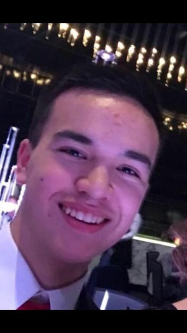

About us
- Adem Doger
- Adem Coskun
- Chinae Humphries
- Darren Geary
- Katelyn Knight
- Loretta Corby
Team members
Adem Doger
 My name is Adem Doger, I’m 18 years old and was born in Australia with a Turkish background. I’m currently enrolled
in my first year of a Bachelor of Information Technology at RMIT. Some of my hobbies include playing games,
listening to music, binging shows and watching boxing. My interests in IT stem from the genuine enjoyment and
satisfaction I get from using computers and other pieces of technology. I have always been fascinated since I
was a child, but that interest coupled with my relative skill in the department led me to pursue it further. My
IT experience so far comprises of my high school subject which I completed, and any of my personal experience in
day to day use.
My name is Adem Doger, I’m 18 years old and was born in Australia with a Turkish background. I’m currently enrolled
in my first year of a Bachelor of Information Technology at RMIT. Some of my hobbies include playing games,
listening to music, binging shows and watching boxing. My interests in IT stem from the genuine enjoyment and
satisfaction I get from using computers and other pieces of technology. I have always been fascinated since I
was a child, but that interest coupled with my relative skill in the department led me to pursue it further. My
IT experience so far comprises of my high school subject which I completed, and any of my personal experience in
day to day use.
Adem Coskun
 My name is Adem Coskun, I’m 18 years old with a Turkish background and have started my first year for Bachelor of Information Technology at RMIT.
I have had an interest in computers ever since I was a child therefore it resulted in me taking up this
course to complete, many of my interests for IT also come from my hobbies at home which includes figuring out
how to build systems at home and also looking at the differences in hardware in computer systems. My hobbies
include playing games, listening to music and looking after my pets at home. Aside from my interest in IT at
home, I have done IT in High School for 2 years and that’s where I have my current experience from and just
general knowledge from at home. Test Results: Myers Briggs Test: INFJ-T / Advocate Learning Style Test: Visual
Psychometric Test: Confidence 6/10, Achievement Driven 7/10. Overall, these tests show that I am more of a
visual learner and work best with examples shown to me visually. I will attempt to complete the work given to
me but may have troubles understanding my work if not explained visually, due to this burden, I will attempt to
make it as clear as I can when I do not understand something and hopefully these test results show my team members what kind of learning style I have. Ideal Job: Network and/or Systems Engineer
My name is Adem Coskun, I’m 18 years old with a Turkish background and have started my first year for Bachelor of Information Technology at RMIT.
I have had an interest in computers ever since I was a child therefore it resulted in me taking up this
course to complete, many of my interests for IT also come from my hobbies at home which includes figuring out
how to build systems at home and also looking at the differences in hardware in computer systems. My hobbies
include playing games, listening to music and looking after my pets at home. Aside from my interest in IT at
home, I have done IT in High School for 2 years and that’s where I have my current experience from and just
general knowledge from at home. Test Results: Myers Briggs Test: INFJ-T / Advocate Learning Style Test: Visual
Psychometric Test: Confidence 6/10, Achievement Driven 7/10. Overall, these tests show that I am more of a
visual learner and work best with examples shown to me visually. I will attempt to complete the work given to
me but may have troubles understanding my work if not explained visually, due to this burden, I will attempt to
make it as clear as I can when I do not understand something and hopefully these test results show my team members what kind of learning style I have. Ideal Job: Network and/or Systems Engineer
Darren Geary
I am a tactile learner; I learn by touching and doing. I best understand and remember things through physically
moving; I best learn "hands-on" and I've always preferred to touch, move, build, or draw what I learn, and I
tend to learn better when some type of physical activity is involved. I like to take things apart and put
things together and I tend to find reasons to tinker or move around when I become bored. As a tactile learner,
I am more of a practical worker, but also tend to do things in bursts and haphazardly - get a lot of work
done at once, then take a break for a while.
Generally I prefer to let someone else take charge - I like to be responsible for only one particular part
of a project. That way, I know that the work I have done is quality or not and who else has done what. This
also carries across when I do group work.
Loretta Corby
 Hi! I’m Loretta Corby, I’m from Melbourne and have lived just north of the city my whole life.
I love going to see live music and hanging out with friends and family.
My interest in IT started through my love for technology, and how I was able to understand new tech easily.
I unfortunately don’t have any experience in IT, but I hope to gain that knowledge and skills through
completing the Bachelor of Information Technology. My MBTI test results were ISTP-T meaning I focus on facts
and details; I am a logical thinker and decision maker and I can be spontaneous and flexible rather than planned
and organized. My learning style is auditory meaning I prefer to learn through having a concept explained to me,
rather than having to read the concept by myself. My Psycho-Metric test results show that I possess assertiveness,
cooperation, openness and patience skills. These results show me that I can adapt to any position in a team, and
I am able to be open and patient with members in the team. I can consider the details of the project and can be
flexible with ideas. I think this can be useful as it will help my team connect our ideas and creativity to the
criteria of the project. My ideal Job is to be a Senior Web Designer.
Hi! I’m Loretta Corby, I’m from Melbourne and have lived just north of the city my whole life.
I love going to see live music and hanging out with friends and family.
My interest in IT started through my love for technology, and how I was able to understand new tech easily.
I unfortunately don’t have any experience in IT, but I hope to gain that knowledge and skills through
completing the Bachelor of Information Technology. My MBTI test results were ISTP-T meaning I focus on facts
and details; I am a logical thinker and decision maker and I can be spontaneous and flexible rather than planned
and organized. My learning style is auditory meaning I prefer to learn through having a concept explained to me,
rather than having to read the concept by myself. My Psycho-Metric test results show that I possess assertiveness,
cooperation, openness and patience skills. These results show me that I can adapt to any position in a team, and
I am able to be open and patient with members in the team. I can consider the details of the project and can be
flexible with ideas. I think this can be useful as it will help my team connect our ideas and creativity to the
criteria of the project. My ideal Job is to be a Senior Web Designer.
Katelyn Knight
 My name is Katelyn Knight, I'm eighteen years old, I was born and raised in Australia and I am currently studying
my Bachelor of Information Technology at RMIT. My Hobbies include but are not limited to, playing games, art and
socialising with friends. My personal interest in IT include things such as programming and as of recently, web
programming. My experience in IT is rather new as I have only just started my IT course, but I have in the past
built my personal computer and learnt the basics of C#. In the Myer-Briggs personality type test I got ESFP-T,
the entertainer , being more extroverted in nature will benefit the group greatly as I have the ability to relate
to others and think on my feet, resulting in being a resourceful and inspiring group member. From the “Big 5
Personality test” I scored a 78% in extraversion which further reinforces the results from the Myer-Briggs
personality type test. Finally, I am an auditory learner which means I can benefit the team as I am able to pick
up more auditory information and understand what needs to be done.
My ideal job is an application Programmer
My name is Katelyn Knight, I'm eighteen years old, I was born and raised in Australia and I am currently studying
my Bachelor of Information Technology at RMIT. My Hobbies include but are not limited to, playing games, art and
socialising with friends. My personal interest in IT include things such as programming and as of recently, web
programming. My experience in IT is rather new as I have only just started my IT course, but I have in the past
built my personal computer and learnt the basics of C#. In the Myer-Briggs personality type test I got ESFP-T,
the entertainer , being more extroverted in nature will benefit the group greatly as I have the ability to relate
to others and think on my feet, resulting in being a resourceful and inspiring group member. From the “Big 5
Personality test” I scored a 78% in extraversion which further reinforces the results from the Myer-Briggs
personality type test. Finally, I am an auditory learner which means I can benefit the team as I am able to pick
up more auditory information and understand what needs to be done.
My ideal job is an application Programmer
Chinae Humphries
 My name is Chinae Roxanne Humphries, I am 28 years old,
born and raised in South Africa. Currently doing my Bachelor of Information Technology at RMIT. My hobbies include exercising.
I make it part of my daily routine. I also enjoy baking and DIY projects. As a young entrepreneur and business owner my interest and passion for IT stemmed
from doing my own online marketing and assisted web designs for my own businesses. I have no official IT
experience to date. I plan to obtain experience whilst completing my Bachelor of Information Technology degree.
I am known to be a perfectionist, but I feel it is a good reflection of my attention to detail. In the Myer-Briggs
personality type test I got INTJ. The results of the three tests reassure me that I am a well-organized and detailed
individual. My learning style is visual. I respond better to information presented in a visual format. Creativity is
my release and I would like to explore this more through my career path. I take my career very seriously and will
do my best to complete any task given to me. The results will be helpful to my group as they will be more aware of
where my strengths and weaknesses are and can therefore balance them out with the other team members' results. My ideal
Job would be a Product Manager.
My name is Chinae Roxanne Humphries, I am 28 years old,
born and raised in South Africa. Currently doing my Bachelor of Information Technology at RMIT. My hobbies include exercising.
I make it part of my daily routine. I also enjoy baking and DIY projects. As a young entrepreneur and business owner my interest and passion for IT stemmed
from doing my own online marketing and assisted web designs for my own businesses. I have no official IT
experience to date. I plan to obtain experience whilst completing my Bachelor of Information Technology degree.
I am known to be a perfectionist, but I feel it is a good reflection of my attention to detail. In the Myer-Briggs
personality type test I got INTJ. The results of the three tests reassure me that I am a well-organized and detailed
individual. My learning style is visual. I respond better to information presented in a visual format. Creativity is
my release and I would like to explore this more through my career path. I take my career very seriously and will
do my best to complete any task given to me. The results will be helpful to my group as they will be more aware of
where my strengths and weaknesses are and can therefore balance them out with the other team members' results. My ideal
Job would be a Product Manager.
IT Work
Donovan Humphries: CTO at DomaCom
1. What kind of work is done by the IT professional?
I do three main things which include software development (coding), IT infrastructure management and support so if DomaCom has any IT related issues I solve them from small things like fixing a mouse to implementing a CMS (content management system).
2. How big is your team?
My team consists of 6 people.
3. How long have you been in the industry? 15 years full time
I have been in the industry for 15 years full time and 5 years part time gaining my experience when I started.
4. What qualifications do you have?
Bachelor of Computer Science,
Master of Business Administration (MBA)
5. What was your first job in the industry?
I started out in the industry as a Web developer.
6. What kinds of people do you interact with? other IT professionals? clients? investors? the general public?
I interact with the other IT people within my team. Business individuals who are in sales, marketing and client services team. I will only interact with a client where there are partnerships involved. I deal with the B2B (business to business) rather than to individual customers.
7. What do you find you spend most of your time on?
I spend most of my time doing product management and development.
8. What aspect of their position is most challenging?
Dealing with people who have low IT literacy. This restricts me as I need to keep things simple to avoid confusion. When you are dealing with someone who has low IT literacy it is hard to be on the same page at limits how technical I can be.
9. What do you like most about your work?
Ability to be creative and solve problems.
10. What is the best career decision you have ever made?
The current position I am was the best career decision I have made. I had to take a step down in terms of my position, but it was an interesting organisation and I saw potential and growth possibilities within DomaCom.
11. How would you describe the IT industry culture?
The IT industry is still very male dominated. The industry is introspective, fun, exciting, current and ever changing. It is where all the cool stuff is happening.
12. Do you think there are opportunities for self-employment within the IT industry?
Absolutely yes through contract work. The industry is built on start-ups. The start up costs are low in comparison to other industries. Your knowledge is your main component.
13. Is the field growing fast enough so that there is room for graduates like ourselves in industry?
No, I don’t think it is growing fast enough. It is hard to get a job in Australia in comparison to the UK where I worked previously. Employees are looking for skills and graduates tend to not have them due to lack of experience and therefore struggle to find jobs.
14. Any advice on how to write a resume that will appeal to employers in the IT industry?
Focus on your practical experience instead of buzz words. The facts count not how you word it.
15. How can we as students assess whether we have the skills needed for a position such as yours?
Technical as well as people skills are important. I suggest doing an internship as it will give you a good idea on what to expect in the industry and if you are able to complete what is expected of you. If you are running a team and have lack of skills or knowledge, they won’t take you seriously.
16. Have you done the Meyers-Briggs assessment? If yes what were your results and is it a good reflection of the type of person you are?
Yes, INTJ. I believe that this test does not represent who you will be under pressure. I can however identify with a few of the points. I also learnt a few things about myself that I was not aware of before such as being an introvert.
17. What hours do you work? Is there flexibility in your hours?
I work 8-5 Monday to Friday, and I have flexibility in my hours due to my position.
If extra hours need to be worked in order to deliver what was promised, then I will work extra hours. I do my best to manage my team effectively so that we do not need to work in the extra hours. Time management is important here.
18. What do you do if you are unable to solve a problem on your own?
I consult my team and we brainstorm ideas on how to solve the problem.
19. What industry related software do you use?
Visual Studio, Visual Studio Code, Azure (hosting) Microsoft.
20. Do you have any advice for us entering the industry?
Build stuff it’s the best thing to show when looking for a job and building up your resume.
Kevin Geary - SAP Project Manager
1. What is your occupation?
SAP Project Manager - manages projects that implement the SAP Enterprise Relationship Planning (ERP) solution for the retail industry
2. How big is your team?
7 people
3. What’s your business name?
RSAP
4. How long have you been in the industry?
24 years
5. What qualifications do you have?
Bachelor of Business - Banking & Finance Major
6. What was your first job in the industry?
Consulting in Andersen Consulting (now accenture)
7. What kinds of people do you interact with? other IT professionals? clients? investors? the general public?
Project teams
Clients (mid-senior level management)
Fellow business directors
8. What do you find you spend most of your time on?
Managing staff/ project schedules
9. What aspect of their position is most challenging?
Dealing with over-budget / overtime projects and difficult team members
10. What do you like most about your work?
Variety - projects are always different and implementing the ERP is always different
11. How would you describe the IT industry culture?
Everchanging - having to constantly learn new skills. People often work long hours and overtime to complete tasks, as opposed to 9-5
12. Do you think there are opportunities for self-employment within the IT industry?
Yes - many people are contractors who offer services to IT companies, including on SAP project teams
13. Is the field growing fast enough so that there is room for graduates like ourselves in industry?
Yes - the industry is always growing and changing - one of the fastest growing fields of work
14. Any advice on how to write a resume that will appeal to employers in the IT industry?
Emphasise technical skill/ knowledge, teamwork experience and exposure to technology
15. How can we as students assess whether we have the skills needed for a position such as yours?
A Project manager must be very organised, good at managing OTHER people’s schedules, interpersonal skills and an ability to see the big picture
16. Have you done the Meyers-Briggs assessment? If yes what were your results and is it a good reflection of the type of person you are?
No
17. What hours do you work? Is there flexibility in your hours?
Maybe 8-10 hours work, but this can increase to 12-13 during highly important periods
18. Where?
At the client’s site - the project office
19. What industry related software do you use?
SAP ERP, MS Office, MS Project, DBMSs
20. What is the best career decision you have ever made?
Not pursuing a career in banking/ finance
21. Do you have any advice for us entering the industry?
Build technical and people skills before leaving uni
Industry Data
Project: Biometric ATMs
The project plan is to create biometric thumbprint scanners for ATMs, to give customers cardless access to their bank accounts. This would supplement the current method of customers using cards and PIN codes to access their accounts, so as to give customers the option between using card or biometric and also in case the biometric method fails.
A thumbprint is always more secure than a card or a pin and entirely unique to a single person, making it impossible to cheat. Even today, with card lock and similar abilities that banks give customers, a thumbprint is far harder to forge or steal. Scanning a thumbprint is also faster than having to insert a card or type out a PIN. In today's day and age, biometric security is becoming more and more ubiquitous. Iris, facial and thumbprint recognition are all commonplace in the commercial world as part of banks, airport security etc. Smartphones and laptops have used thumbprint and facial recognition software for many years now. It seems logical that something as widely used as ATMs should have biometric security, at least alongside current security.
The project will require software and hardware changes to current ATMs. Adding thumbprint scanners will be required. To set up, customers can use their banking app, or go to a bank branch in person to set up any number of thumbprints they like that can access to their account on an ATM. This thumbprint is stored in the bank's database. If they already have a thumbprint set up, they have the option of enabling or disabling access by thumbprint for ATMs. They won't have the option of disabling access by card - this should be a fallback in case they are unable to use an ATM with their fingerprint. As for the physical scanners themselves, these are available off-the-shelf commercially for individuals and companies alike. If needed, scanners can be built for the ATMs. The scanners should be built into existing ATMs,
Extra code may have to be written for the ATMs to be able to use the thumbprint scanners. However, due to how commonplace
these scanners are, it may be possible to implement existing software so as to reduce the work and cost needed.
The implementation process will involve construction and programmers alike, though the skills should not be too hard to find.
Again, due to how common biometric security is, it will surely be easy to find programmers to program the scanners
to work with ATMs. It may be more difficult inserting the scanners into the ATMs themselves
The perfect outcome and ultimate goal would be to reduce the average use time of ATMs and improve customer satisfaction.
People don't like to take too long just to withdraw cash at an ATM and they like waiting in line to use one even
less.
Individual Feedback
Chinae Roxanne Humphries
Katelyn Knight is a very bubbly team member who was always happy on our group chats. She is aware of where her interest and strengths are and volunteered to focus on those elements of the assignment willingly. She did a great job at completing all the tasks delegated to her.
Loretta Corby was our allocated group leader. She is a good leader and monitored that tasks were completed on time. She guided group meetings well and kept us focused on the facts/task at hand. She is a very understanding and patient team leader.
Adem Doger is the genius behind our project idea. His idea from assignment one was the base of our project idea for assignment two. He is a very vocal team member and presented good ideas and feedback during our meetings and general group discussions.
Darren Geary played an active part in all our meetings and is always making sure work is evenly spread amongst team members and offering help wherever needed. He is knowledgeable about html and css and helped our group regarding putting the assignment together.
Adem Coskun completed tasks given to him and completed them on time. He attended all group meetings and gave his input when making group decisions. He offered help to the group when his tasks were completed.
Loretta Corby
Chinae Humphries was a great team member to have in our group. She consistently contributed to team meetings and discussions about the assignment, and always stuck up her hand to help if anyone needed it. Chinae gave us a great IT professional interview, and helped with a lot of the part of the assignment.
Katelyn Knight was a great addition to the group as she is very passionate about working on the html and css side of the assignment, and wanting it to be of great skill. Katelyn always added to our group conversations and group meetings, and always kept up to date.
Darren Geary was our main guy for css and html work, continuously chipping away at our html and css part of the assignment. Darren was also able to get an IT professional interview, and was present and contributing to every team meeting.
Adem Doger helped significantly with our project idea section, as he provided the base idea for it and helped extend the idea further. He always completed his work, always added important information to group meetings and was consistently prepared to do extra work where needed.
Adem Coskun was an excellent group member. Adem always completed assignment work and always willing to do more. He came to every group meeting, and presented great additions to our group discussions.
Katelyn Knight
Adem Coskun completed all the tasks required and got them done by the due date we had personally set as a group. He participated in all group meetings and group discussions, when Adem had completed his own work he offered to help with other tasks.
Adem Doger participated in great lengths throughout the assignment, most particularly in the project ideas section where we unanimously decided to use his project idea, the RMIT Mobile App. Adem consistently participated in the group meetings and in group discussions throughout the duration of the assignment and offered valuable information whenever possible.
Chinae Humphries was an excellent member of the group, she added important insight and always got her work done on time. Chinae always participated in the group meetings and discussions, as well as supplied us with an interview from an IT professional and putting a lot of work into the assignment.
Loretta Corby was a focused and helpful addition to the team, she was an active and excellent member to have during the team meetings and discussions, Loretta aided in setting due dates for when something needed to be done and putting in a lot of effort into the assignment itself.
Darren Geary was a fantastic member of the group and had a committed and engaged role in the team and participated in a large portion of the assignment, he had additionally supplied the group with another IT professional and worked diligently to get all the work required of him done by the due date, Darren also participated in all the group meetings and worked with everyone to get things done.
Adem Coskun
Loretta Corby is a fantastic team leader which controlled when and supervised the work and made sure it was done on time and gave us insight and guidance when needed during interviews and provided great discussions during the interviews. She did a good job keeping all of us in check and making sure we were not being left behind on the work.
Darren Geary is an excellent member in our team since he was working on the HTML and CSS sided stuff a lot as he has good understanding in the matter and without his help we would not have succeeded as much as did, he was also responsible for recording the lectures and provided great ideas and suggestions during our interviews which helped us a lot.
Katelyn Knight is a great aspect in our team providing us with a lot of different ideas and being extremely keen on doing the work, she let us know during the interviews what she could work on efficiently, knowing her strengths in certain aspects which helped the rest of the team work on each other’s strengths and weaknesses, She did a great job on completing all of the work assigned to her.
Chinae Humphries is a fantastic member in our group, she helped out in all aspects especially the interview for an IT professional which helped our group a lot as she was able to get in contact with one making our assignment much easier with her help, on top of this her contribution during the team interviews was of great help to our group providing great discussions to base our work off of.
Adem Doger is an excellent member and has helped a lot during specific parts of the assignment especially with his project idea in which we all based the final task off being the RMIT Mobile App. During his time spent in the interviews he helped us a lot with great views on work and offered important decisions which helped the groups viewpoint.
Adem Doger
Darren Geary was a great team member, and he tended to take up the role of chair during our meetings and conducted them to use our time efficiently. He also was one of the main people to work on the HTML and CSS, making him even more valuable. He also provided the group with an additional interview with an I.T professional.
Adem Coskun was a good team member as well, completed all the work assigned to him to a high standard and was always vocal during meetings. He also lightened the tone of our meetings sometimes with his interjections, helping to build our team's overall relationship.
Chinae Humphries as a fantastic addition to our group. She never shied away from accepting more work to complete the assignment faster, and also did the interview for the IT professional section. She was an all around consistently great member who was a major reason the assignment came together.
Katelyn Knight is also a great team member. She kept the environment feeling friendly with her willingness to engage in conversation, again making our group feel more like friends working together, which alleviated some of the stresses. She was also always completing the work that was needed and even going beyond. She also helped design the html and css.
Loretta Corby was also a fantastic member for the group. She was always involved in every step of the assignment, and helped keep the team organised in terms of what needed to be completed and by when. She was a major reason as to why the result came so seamlessly and organically.
Darren Geary
Adem Coskun was the hardworking backbone of the group. He worked on many different sections of the project such as the project ideas and IT Technologies. Very little to none of his work needed any correction or editing, such was the quality of his work. He was also friendly and uncritical in discussion and often offered to help with other sections of work.
Adem Doger was extremely reliable and always performed to a high standard, but also provided plenty of creative input, influencing the CSS and HTML layouts. He was often responsible for pointing out flaws and missing content in the project ideas and design. He provided lots of input on the RMIT Mobile App idea and wrote about IT Technologies.
Chinae Humphries brought lots of prior experience to the team and a strong work ethic. She was always the first to finish her sections of work and often began the next stages of the project before anyone else. In meetings she was very organised, listing what needed to be done for the group and often nominated herself to do more work than others, purely to help ease the burden on other teammates. She provided a useful perspective with her IT Professional interview.
Katelyn Knight was a veritable acrobat, juggling so many different roles and jobs at once with such dexterity it would leave little left to be done. She often took the role of management in meetings, deciding what needed to be done by whom with logic and fairness - yet always offering to do the most work. She worked on the written content such as IT Technologies, but also tirelessly on the HTML and CSS. She was also the most communicative, updating the group on each milestone of the project.
Loretta Corby was highly enthusiastic and was always ready to do what needed to be done. She helped lighten the mood of meetings, providing plenty of support on top of her workload. She wrote plenty about our project ideas and IT Technologies. She also had many useful insights about how to improve the content of our project, pointing out better ways to convey information and what else to add.
Group Reflection
Chinae Roxanne Humphries
High5 worked well as a team. We all completed tasks delegated to us within the given time frames. We reached consensus on all group decisions with no big issues or disagreements. This was most surprising to me due to bad experiences with teamwork in past studies. The team had no conflict or disagreements that needed to be addressed in order to resolve. It took us a bit longer to select a project idea as we wanted to select something achievable for assignment three. We eventually came to an agreement and unanimously decided on a project idea. Everyone attended scheduled meetings and gave their input. Our meetings were regular and to the point for us to easily keep track of who was responsible for which task and, to monitor our teams progress. We are a well-balanced team with different personalities that worked well together. The tasks allocated to the team members were based on their interests and strengths. Work was evenly distributed between the team members and we communicated regularly regarding work that needed to be done, work completed as well as any push or pull actions carried out to avoid conflict. As a group we could improve by looking at the feedback of this assignment and identify where our weaknesses are as a group and address them in assignment three. I have learnt that it is possible to be in a group where all team members pull their weight and have an equal contribution to the assignment.
Loretta Corby
HIGH5 was a great group to be a part of for this assignment. From the start, we all got along great and were able to bounce off ideas in our first group meeting. It was great to be a part of a group that was made of such diverse personalities, as it made the process of coming to decisions more encompassing, as every possible solution was considered. Everyone attended every group meeting and contributed a great deal to them. I thought the way in which we decided on the project idea was great, as we all provided our previous assignment’s idea and were able to choose the best idea that suited us as a group, and the one we thought was the best for taking through to assignment 3. It was great to see everyone putting in their best efforts and working hard to get assigned tasks done by the agreed date. I look forward to continue working on the following assignments with this group.
Katelyn Knight
What I believe went well was how excellently we all worked together as a group, everyone pulled their own weight and got things done to an above satisfactory level of work, everyone in the group made themselves available for group meetings and participated in discussion outside the meetings to get work done and keep active communications between the group. I cannot think of anything that needs to be approved upon as I wholeheartedly believe we all did a great job in this assignment. One thing that surprised me was how well we all worked together and how everyone did as they were expected and requested of, we were two groups merged and the group chemistry is considerably great considering the circumstances of the merging. One thing I learned about groups is that when many amazing individuals with dedicated mindsets come together to work towards a certain goal, they are able to accomplish many great things, this experience has really opened my mind up to working in groups and what great can come from it and I thoroughly look forward to working with everyone again in future assignments
Adem Coskun
Our group (High5) was an excellent group to be apart of during this assignment, we cooperated amazingly and got the work done in time and provided a lot of help for each other. Every member was excellent in the way they operated and done their tasks and each person had their own work to manage and they did. Our interviews and the way we discussed our work showed how well our team worked together and made sure we got all the work done whilst making sure no one was facing any problems and if they were, how to correct and help the people who had confusion within the topics. All of this shows how great the team worked together as we finished the work with a satisfactory level and helped each other when needed. Due to my lack of knowledge is some areas, it was good to see how others approached the situations which helped me a lot in seeing how I should also approach a certain situation. Overall, I am looking forward to working with this group again for future assignments and hopefully I can be more knowledgeable in our work making sure I provide more help when needed.
Adem Doger
Our Group worked fantastically throughout the course of the entire assignment. Despite coming together somewhat inorganically, we quickly became very co-operative, which became seminal to the final outcome. Every single group member completed a sufficient amount of work, with most even going further in order to maximise the success of the assignment. Our bi-weekly meetings were always clearly scheduled, and each one had all members present and discussing ideas in order to efficiently designate and complete tasks. Throughout the time we were together, we had very strong communications, with no member being out of reach, meaning any requests or inquiries we had were quickly met with valuable feedback. Our consistent organization meant that each member had a set amount of work to do by a set date, meaning our progress was never hindered by missing pieces of information, furthering the momentum we had built as a team. I genuinely lack any sort of criticisms for the way we worked together to complete this assignment, and it has taught me a lesson about the importance of communication and consistency in a group environment. I look forward to working with High5 again in the upcoming assignments.
Darren Geary
The way High 5 came together was a last minute amalgamation of several people. Yet, High 5 has been nothing less than a privilege to be a part of. Despite coming from different backgrounds, with different levels of skill and interests, the members of High 5 had cohesion I’ve rarely found in group projects. Every member was hardworking, clever, friendly, uncomplaining and brought something unique to the table, whether prior experience, useful editing knowledge or even just a few good laughs. Oftentimes, the project felt less like a task to be done and more truly like something done just for fun and passion for IT. When I, or anyone else ran into a problem, we didn’t even need to ask for help - someone would step in and pick up the slack or show us how to do it. Communication was constant and everyone always was easy to talk to and replied with what they’d achieved. Yet, it never felt bothersome because the group was able to bond over jokes and humorous interjections during meetings and chats. During downtime we would often talk about anything; our lives, our subjects and our interests - which always came back to IT. I certainly look forward to working with High 5 again.